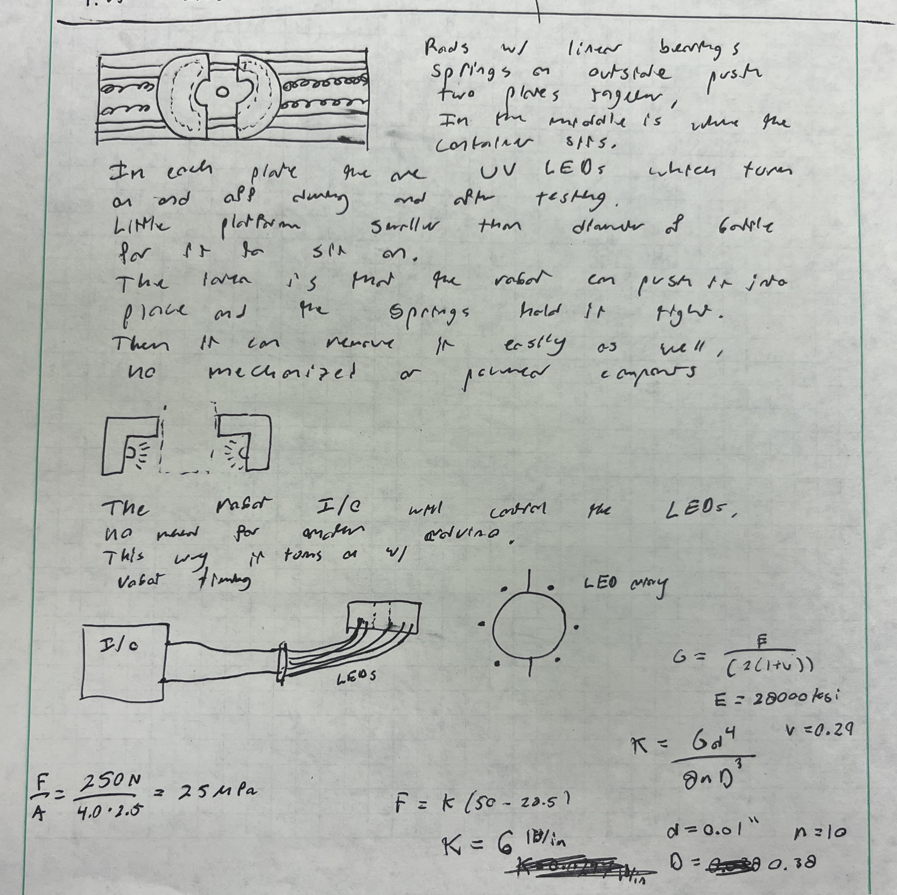
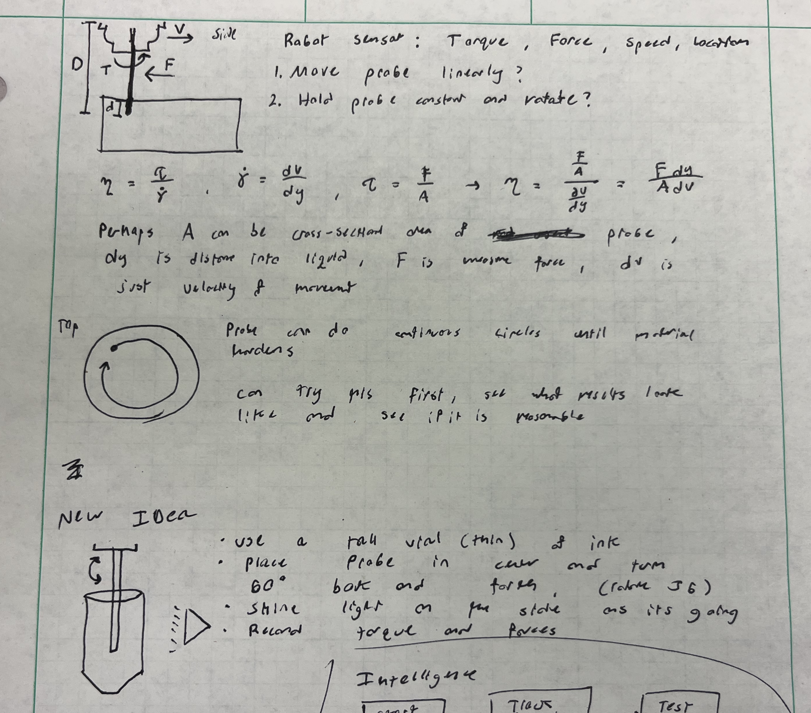

Curing Time Testing Platform Design Process
A detailed look at the iterative design process for the automated curing time testing platform.
Initial System Concept


Initial sketches and notes exploring automated curing time testing system. This concept established the basic layout and component integration for automated material curing analysis in the self-driving lab.
First CAD Iteration

Initial CAD iteration with a focus on the hardware to secure the container of photopolymer ink. The UV LEDs were initially sought to be integrated, but the design changed to have the UV LEDs below and separate from this platform. The hands that secure the container and the base pieces that attached to the table were designed, but the remaining components were purchased.
Final Implementation

The completed curing time testing platform successfully integrated into the self-driving lab's material analysis system, providing reliable automated curing time measurement for various material formulations.
Key Learnings
- Sensor Integration: Careful design of the platform was important to allow for the UV LEDs to be placed below and separate from the platform. It also allowed for the thermal camera to be able to view the curing process from the side.
- Environmental Control: The temperature during curing can reach 100 degrees Celsius, so the platform was designed to be able to withstand the heat with FDM printed ABS plastic.
- Spring Calculations: Spring force was calculated to ensure the container cannot move, but a robot can still place and remove it from the platform.